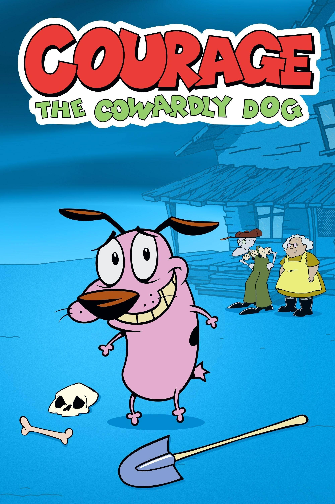

Courage the Cowardly Dog

Details
My notes
Courage.
About
Courage is a nervous pink dog who lives with Muriel and Eustace Bagge in an isolated farmhouse in Nowhere. Strange creatures and supernatural trouble repeatedly arrive, and Courage tries to protect his family despite being frightened.
The Cartoon Network series was created by John R. Dilworth. It mixes comedy with eerie imagery. This entry records the remembered title, without choosing a personal favourite episode or inventing when or where it was watched.
Things to recognise
- Courage’s pink body, black ears, and worried expression.
- Muriel’s yellow clothes and Eustace’s hat and glasses.
- The lonely farmhouse and the strange visitors.